항공기관정비기능사 (2004-07-18 기출문제)
1과목: 비행원리
1. 그림과 같은 항공기의 날개의 형태는?
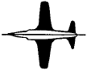
- 오지형
- 테이퍼형
- 뒤젖힘형
- 삼각형
(정답률: 85%)

2. 다음 중 슬롯 플랩을 나타낸 그림은 어느 것인가?
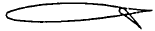
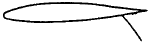
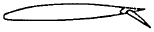
(정답률: 58%)
3. NACA 651 - 215 날개골에서 설계 양력계수(design lift coefficient)는 얼마인가?
- 0.6
- 0.5
- 0.2
- 0.1
(정답률: 39%)
4. 다음의 설명중 틀린 것은?
- 상승률이 0.5m/sec되는 고도를 실용상승한계라고 한다.
- 이용마력과 필요마력이 같아져서 상승률이 0 이 되는 고도를 절대상승한계라고 한다.
- 실용상승한계는 절대상승한계보다 고도가 낮다.
- 실제로 비행기가 운용할 수 있는 고도를 운용상승 한계라고 하며 이 고도는 상승률이 25m/sec되는 고도를 말한다.
(정답률: 63%)
5. 헬리콥터가 비행기와 같은 고속도를 낼 수 없는 이유로서 가장 거리가 먼 내용은?
- 후퇴하는 깃의 날개끝 실속
- 후퇴하는 깃뿌리의 역풍범위의 영향
- 전진하는 깃끝의 마하수 영향
- 회전하는 날개깃의 수
(정답률: 80%)
6. 공기온도가 일정할 때 압력이 증가하면 나타나는 현상으로 가장 올바른 것은?
- 체적은 감소하고 밀도는 증가한다.
- 밀도는 감소하고 체적은 증가한다.
- 밀도와 체적이 모두 증가한다.
- 밀도와 체적이 모두 감소한다.
(정답률: 54%)
7. 날개의 시위길이가 3m, 공기의 흐름속도가 360㎞/h, 공기의 동점성계수가 0.15㎝2/s일 때 레이놀즈수는 얼마인가?
- 2x107
- 2x109
- 3x107
- 3x109
(정답률: 56%)
8. 날개길이 14m, 기하학적 평균 시위가 2m인 테이퍼형 날개의 가로 세로비는 얼마인가?
- 7
- 12
- 14
- 28
(정답률: 75%)
9. 동적 세로 안정의 단주기 운동 발생시 조종사가 대처해야 하는 방법으로 가장 올바른 것은?
- 즉시 조종간을 작동 시켜야 한다.
- 비행 불능상태 이므로 즉시 탈출하여야 한다.
- 조종간을 자유롭게 놓아야 한다.
- 받음각이 작아 지도록 조작해야 한다.
(정답률: 88%)
10. 압력중심(CENTER OF PRESSURE)에 대한 설명으로 가장 올바른 것은?
- 받음각을 크게하면 날개 앞전쪽으로 이동한다.
- 받음각을 작게하면 날개 앞전쪽으로 이동한다.
- 날개에 작용하는 압력의 합력점을 공기력중심이라 한다.
- 받음각의 변화에 따라 풍압중심의 변화는 없다.
(정답률: 76%)
11. 비행기가 가속도 없이 정상비행 할 경우 하중배수는 얼마인가?
- 0
- 0.5
- 1.0
- 1.5
(정답률: 81%)
12. 비행기 무게가 2,000 kgf, 고도가 5,000m 상공에서 급강하 하고 있다. 항력계수(CD)= 0.03, 날개하중 w/s= 274 kgf/m2, ρ = 0.075 kgfㆍs2/m4일 때 급강하 속도를 구하면 얼마인가? (1m/s = 3.6 km/h)
- 1972.8 km/h
- 1233 km/h
- 1423 km/h
- 1776.6 km/h
(정답률: 40%)
13. 비행기 기준축을 중심으로 발생하는 모멘트의 종류가 아닌 것은?
- 옆놀이 모멘트
- 빗놀이 모멘트
- 축놀이 모멘트
- 키놀이 모멘트
(정답률: 95%)
14. 턱 언더(tuck under) 현상을 가장 올바르게 설명한 것은?
- 지면 부근에서 저속으로 비행시 속도를 증가시킬 수록 기수가 내려가는 경향이 생겨 조종간을 당겨야 하는 현상이다.
- 음속에 가까운 속도로 비행시 속도를 증가시킬 수록 기수가 올라가는 경향이 생겨 조종간을 밀어야 하는 현상이다.
- 음속에 가까운 속도로 비행시 속도를 증가시킬 수록 기수가 내려가는 경향이 생겨 조종간을 당겨야 하는 현상이다.
- 아음속으로 비행시 속도를 감소시킬 수록 기수가 내려가서 조종간을 밀어야 하는 현상이다.
(정답률: 64%)
15. 헬리콥터의 회전날개에 대한 설명 내용으로 가장 관계가 먼 것은?
- 우수한 정지비행 성능을 위해서는 지름이 클 수록 좋다.
- 전진 비행시에 전진하는 깃의 저소음을 위해서는 깃의 속도가 느린 것이 좋다.
- 고속에서의 좋은 기동성을 위해서는 깃의 면적이 커야 한다.
- 저진동을 위해서는 깃의 수가 적어야 한다.
(정답률: 39%)
16. 기관의 저장시 습도지시계의 색이 무슨색일 때 습기에 가장 안전한 상태인가?
- 흰색
- 검정색
- 핑크색
- 청색
(정답률: 67%)
17. 대수리 작업과 가장 거리가 먼 것은?
- 객실내 의자 및 화장실 수리작업
- 특수한 시설 및 장비를 필요로 하는 작업
- 내부 부품의 복잡한 분해작업
- 예비품 검사대상 부품의 오우버호올
(정답률: 76%)
18. 마이크로미터를 좋은 상태로 유지하고 측정값의 정확도를 높이려면 다음의 사항을 주의해야 한다. 가장 관계가 먼 것은?
- 마이크로미터를 보관할 때 앤빌과 스핀들이 서로 맞닿게하여 흔들림을 방지해야 한다.
- 마이크로미터 스큐류는 블록 게이지를 사용하여 정기적으로 점검한다.
- 마이크로미터 기구에 이물질이 끼여 원활하지 못할 때는 이를 닦아낸다.
- 심블을 잡고 프레임을 돌리면 스크류가 마멸되므로 주의한다.
(정답률: 73%)
19. 스프링과 지렛대 원리를 이용하여 부품등을 강력하게 잡아 주려고 할 때 사용하며 일종의 C-클램프 역할을 하는 공구는 무엇인가?
- Needle Nose Pliers
- Vise-grip Pliers
- Connector Pliers
- Slip Joint Pliers
(정답률: 68%)
20. 드릴작업에 필요한 Start hole을 내는데 사용하는 펀치는?
- Center Punch
- Start Punch
- Drive Pin Punch
- Prick Punch
(정답률: 73%)
2과목: 항공기정비
21. 항공기에 사용되는 전선은 그림과 같이 전선피복에 표시되어 있는 기호로서 전선의 굵기와 전선이 사용되는 계통을 알 수 있다. 올바른 것은?
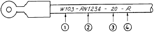
- ① : 항공기 계통기능
- ② : 전선뭉치 번호
- ③ : 전선의 굵기
- ④ : 연결된 계기
(정답률: 72%)
22. 그림의 너트는 무엇을 나타내는가?
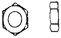
- 캐슬너트
- 체크너트
- 평너트
- 플레이트 너트
(정답률: 53%)
23. 화학적 또는 전기화학적인 작용으로 인해서 금속이 퇴화되는 현상을 무엇이라 하는가?
- 알크래딩(Alcladding)
- 부식(Corrosion)
- 아노다이징(Anodizing)
- 알로다이징(Alodizing)
(정답률: 76%)
24. 다음의 보기에서 형광침투 검사의 순서로 가장 올바른 것은?
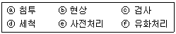
- ⓔ-ⓕ-ⓑ-ⓐ-ⓓ-ⓒ
- ⓔ-ⓐ-ⓕ-ⓓ-ⓑ-ⓒ
- ⓔ-ⓓ-ⓐ-ⓑ-ⓕ-ⓒ
- ⓔ-ⓐ-ⓑ-ⓒ-ⓕ-ⓓ
(정답률: 43%)
25. 육안검사(visual Inspection) 범주에 속하는 비파괴 검사는 어느 것인가?
- 보어스코프 검사
- 초음파 검사
- X-Ray 검사
- 자분탐상 검사
(정답률: 90%)
26. 장비 및 기기가 수리, 조절 및 검사 중 일때 이들 장비의 작동을 방지하기 위하여 사용되는 안전색채는 어느 것인가?
- 검은색
- 황색
- 청색
- 적색
(정답률: 73%)
27. 귀보호 장구에서 저음에서 고음까지 차음할 수 있는 귀마개는 몇 종인가?
- 제 1종 귀마개
- 제 2종 귀마개
- 제 3종 귀마개
- 제 4종 귀마개
(정답률: 39%)
28. 산소취급시의 주의사항으로 가장 관계가 먼 것은?
- 산소자체는 가연성 물질이므로 폭발의 위험 보다는 화재에 유의 한다.
- 15m 이내에서 인화성 물질을 취급해서는 않된다.
- 취급자의 의류 또는 공구에 유류가 묻어있지 않도록 한다.
- 액체산소를 취급할 때는 동상에 걸릴 위험이 있다.
(정답률: 80%)
29. 다음 중 가장 올바른 표현 내용은?
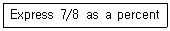
- 0.875
- 8.87
- 87.5
- 875
(정답률: 66%)
30. 밑줄친 부분을 의미하는 올바른 단어는?
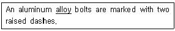
- 부식
- 강도
- 합금
- 응력
(정답률: 90%)
31. 다음은 공장정비 내용의 순서이다. 가장 올바른 것은?
- 분해-세척-검사-수리-조립-시험/조정-보존 및 방부처리
- 분해-검사-세척-수리-조립-시험/조정-보존 및 방부처리
- 수리-세척-검사-분해-조립-시험/조정-보존 및 방부처리
- 검사-분해-세척-수리-조립-시험/조정-보존 및 방부처리
(정답률: 79%)
32. 작업자의 책임과 관계 없는 것은?
- 작업자는 작업시 반드시 규정과 절차를 준수해야 한다.
- 작업시 보호 장구가 필요할 때에는 반드시 보호 장구를 착용해야 한다.
- 작업장 및 주위 환경보다 자기가 하고 있는 작업에 몰두한다.
- 작업장의 상태를 청결히 하고 정리.정돈하여 사고의 잠재 요인을 제거하도록 노력한다.
(정답률: 94%)
33. CO2 소화기와 CBM 소화기의 단점을 보완하여 새로 개발한 소화기는?
- 할론 소화기
- 포말 소화기
- 분말 소화기
- 중탄 소화기
(정답률: 84%)
34. 항공기의 지상취급에 속하지 않는 것은?
- 항공기 견인
- 항공기 유도
- 계류 작업
- 세척
(정답률: 75%)
35. 복선식 안전결선 작업에서 고정 작업을 해야할 부품이 4∼6in(10.2∼15.2㎝)의 넓은 간격으로 떨어져 있을 때, 연속적으로 고정할 수 있는 부품의 수는 최대 몇 개로 제한되어 있는가?
- 2개
- 3개
- 4개
- 5개
(정답률: 78%)
36. 점화 플러그(Spark plug)의 설명중 잘못된 것은?
- 점화 플러그는 전극, 세라믹절연체, 금속쉘로 구성되어 있다.
- 열의 전달특성에 따라 일반적으로 핫(Hot)플러그, 콜드(Cold)플러그, 일반(Normal)플러그로 분류한다.
- 과열되기 쉬운 기관에는 핫플러그를 사용한다.
- 점화 플러그는 내열성과 절연성이 좋아야한다.
(정답률: 74%)
37. 왕복기관에서 연료소비율이 가장 적은 상태에서 얻어지는 동력은?
- 순항마력
- 정격마력
- 이륙마력
- 체적마력
(정답률: 82%)
38. 항공용 왕복기관 연료계통의 구성중에서 기관을 시동할 때 실린더 안에 직접 연료를 분사시켜 주는 장치는?
- 프라이머
- 연료선택밸브
- 주연료펌프
- 비상연료펌프
(정답률: 70%)
39. 18개의 실린더를 갖고 있는 왕복기관의 각 실린더의 지름이 0.15m 이고 실린더의 길이가 0.2m 이며 피스톤의 행정 거리가 0.18m라고 한다면 이 기관의 총 행정체적은 몇 m3 인가?
- 0.048
- 0.⑤4
- 0.⑤7
- 0.063
(정답률: 40%)
40. 프로펠러의 추력 크기에 관한 설명 내용으로 가장 올바른 것은?
- 공기의 밀도에 반비례한다.
- 회전속도의 제곱에 비례한다.
- 프로펠러의 지름에 반비례한다.
- 추력계수에 관계없이 일정하다.
(정답률: 64%)
3과목: 항공기관
41. 엔진이 정지하고 있을때 부자식 기화기에서 연료가 누설된다면 가정할 수 있는 원인이 아닌 것은?
- 부자(FLOAT)에 구멍이 뚫어졌을 때
- 부자 니이들 밸브가 닳았다.
- 부자 니이들 밸브 자리에 오물이 끼었다.
- 이코노마이져 밸브가 열려 있다.
(정답률: 50%)
42. 부자식 기화기(float-type carburetor)에서 완속조절(idle speed adjustment)을 하기 위하여 통상 사용하는 방법은?
- 완속장치에 연료공급을 막히게 한다.
- 오리피스(orifice)와 조절할 수 있는 경사진 니들 밸브(needle valve)
- 부자실(float chamber)과 기화기 벤추리(carburetor venturi)통로를 막는다.
- 스로틀 스톱(throttle stop)이나 혹은 링케이지 (linkage)를 조절한다.
(정답률: 45%)
43. 점검을 위해서 가장 쉽게 떼어낼 수 있는 연소실의 형태는?
- Annular Type
- Can Type
- Can-Annular Type
- Axial-Annular Type
(정답률: 75%)
44. 원심력 압축기에 대한 설명중 틀린 것은?
- 단당 압력비가 높고 제작이 쉽다.
- 압축기 입구와 출구의 압력비가 높고 효율이 높다.
- 구조가 튼튼하고 값이 싸다.
- 추력에 비하여 기관의 전면 면적이 커서 항력이 크다.
(정답률: 42%)
45. 터빈 기관에서 노즐 다이어프램의 주 목적은?
- 가스압력을 증가시키기 위해서
- 가스속도를 증가시키기 위해서
- 최대추력을 얻기 위해서
- 질량을 감소시키기 위해서
(정답률: 59%)
46. 가스터빈 기관의 오일 구비조건으로 틀린 것은?
- 저온에서 낮은 유동성을 갖을 것
- 온도 변화에 따라 점도 변화가 작을 것
- 인화점이 높을 것
- 산화 안정성이 클 것
(정답률: 55%)
47. 역추력 장치에 대한 내용으로 가장 올바른 것은?
- 스로틀이 저속 위치가 아니면 작동되지 않는다.
- 어느 속도에서나 필요시에 작동한다.
- 스로틀이 중속상태에서 작동된다.
- 스로틀이 고속상태에서 작동되어야 실속위험이 적다.
(정답률: 40%)
48. 연료 조정장치와 연료 매니폴드 사이에 위치하여 연료 흐름을 1차 연료와 2차 연료로 분류시키고 기관 정지시에 매니폴드나 연소실에 남아 있는 연료를 외부로 배출시키는 역할을 하는 밸브를 무슨 밸브라 하는가?
- 드레인 밸브
- 가압 밸브
- 매니폴드 밸브
- 여압 및 배출 밸브
(정답률: 73%)
49. 터보제트 엔진(Turbo-jet engine)에서 가스압력이 가장 높은 곳은?
- 테일 파이프의 출구(Exit of the tail pipe)부분
- 테일 파이프의 입구(Inlet of the tail pipe)부분
- 공기흡입구(Air lnlet of duct)부분
- 연소실의 입구(Inlet of the burners)부분
(정답률: 50%)
50. 25[㎰]의 출력인 내연기관의 연료 소비량이 4[㎏/h]이다. 연료의 발열량이 10,000[㎉/㎏]이면 이 내연기관의 열효율은 몇 [%]인가?
- 35.1
- 39.5
- 43.2
- 54.8
(정답률: 35%)
51. 항공용 기관에서 내부에 기계적 기구를 가지지 않고 디퓨저, 밸브망, 연소실 및 분사노즐로 구성된 기관은?
- 펄스 제트기관
- 램 제트기관
- 로켓트 기관
- 프롭팬기관
(정답률: 57%)
52. 왕복기관에서 자연발화에 의해 기관에 큰 소음과 진동, 출력감소 및 기관 과열 등의 원인이 될 수 있는 현상은?
- 노킹(knocking)
- 킥백(kick back)
- 베이퍼록(vapor lock)
- 조기점화(pre-ignition)
(정답률: 62%)
53. 왕복기관에서 과급기가 없는 기관의 매니폴드 압력은 대기압과 어떤 관계가 있는가?
- 대기압보다 높다.
- 대기압과 같다.
- 대기압보다 낮다.
- 대기압과 관계없다.
(정답률: 73%)
54. 기관 연료계통에 대한 순서가 맞는 것은?
- 주연료펌프 → 여과기 → FCU → P&D V/V → 연료매니폴드 → 노즐
- 주연료펌프 → FCU → 연료여과기 → 연료매니폴드 → P&D V/V → 연료노즐
- 연료펌프 → 여과기 → P&D V/V → FCU → 연료매니폴드 → 노즐
- 연료펌프 → 여과기 → P&D V/V → 연료매니폴드 → FCU → 연료노즐
(정답률: 53%)
55. 터빈엔진을 시동하는 동안 점화를 위한 전원은 언제 공급되어야 하는가?
- 계속적으로
- 기관을 가속하기 전에
- 연료가 공급되기 전에
- 연료가 Nozzle에 공급된 후
(정답률: 42%)
56. 가스터빈 엔진에서 배기노즐(Exhaust Nozzle)의 가장 중요한 사용 목적은?
- 터빈의 냉각을 도모
- 축방향 흐름을 얻기 위해
- 가스속도를 증가하기 위해
- 가스압력을 증가하기 위해
(정답률: 65%)
57. 가스터빈 기관의 터빈 브레이드(Turbine blade)의 냉각 방법과 관계가 없는 것은?
- 대류냉각(Convection Cooling)
- 확산냉각(Divergent Cooling)
- 공기막 냉각(Air Film Cooling)
- 침출냉각(Transpiration Cooling)
(정답률: 62%)
58. 제동 열효율을 환산하는 계산식은?
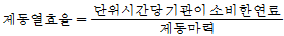
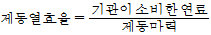
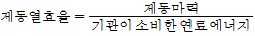
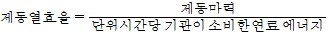
(정답률: 21%)
59. 항공기용 왕복기관에 대한 설명으로 가장 관계가 먼 것은?
- 대향형 기관의 실린더 수는 항상 짝수이다.
- 1렬 성형 기관의 실린더 수는 항상 홀수이다.
- V형 기관의 실린더 수는 항상 홀수이다.
- 대향형 기관은 경비행기와 경헬리콥터에 주로 사용된다.
(정답률: 63%)
60. 그림에서 과정 1 → 2를 바르게 설명한 것은?
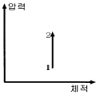
- 정적 과정
- 정압 과정
- 등온 과정
- 단열 과정
(정답률: 47%)